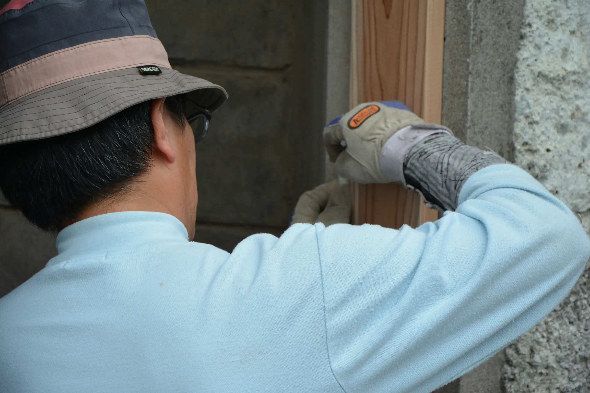

Business
事業紹介
不動産の保有・管理から、建物の修繕、情報のご提供、海外のお客様の支援まで。RY の事業を、ひとつずつ。
- 不動産保有・管理・運営サポート 物件の保有から日々の管理・運営まで、トータルでサポート。 詳しく
-

建物修繕 退去立会・原状回復・内装工事・建物メンテナンス。 詳しく -
 不動産投資に関する情報提供
情報・資料のご提供（市場や流れの詳しい解説は投資ガイドへ）。
詳しく
不動産投資に関する情報提供
情報・資料のご提供（市場や流れの詳しい解説は投資ガイドへ）。
詳しく
- 投資サポート 日本での不動産・各種手続きを、言語と現地ネットワークの面から支援。 詳しく
- 実績・事例 これまでの管理・運営の実績と、具体的な事例。 詳しく
L1 概览页：レイアウト＝A 大判バンド（社長選定済·B 非対称ウォール案は撤去）。順＝①〜⑤ 信任優先。文案＝content 占位（正本は各 L2）。⚠ ③情報提供・④投資サポート＝合规高危（公開前に行政書士・弁護士確認·詳細は L2）。入口 href＝予定ルート（jump 阶段で接続）。